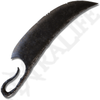
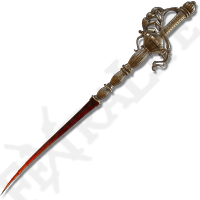

Machado Longhaft
Um machado brutal usado pelos cavaleiros da morte.
Valor: 7000 Runas

Faca do Açougueiro
Um enorme cutelo de guerra que estraçalha inimigos com facilidade.
Valor: 5500 Runas

Rapieira de Espinhos
Uma lâmina perfurante que aplica podridão escarlate.
Valor: 4300 Runas